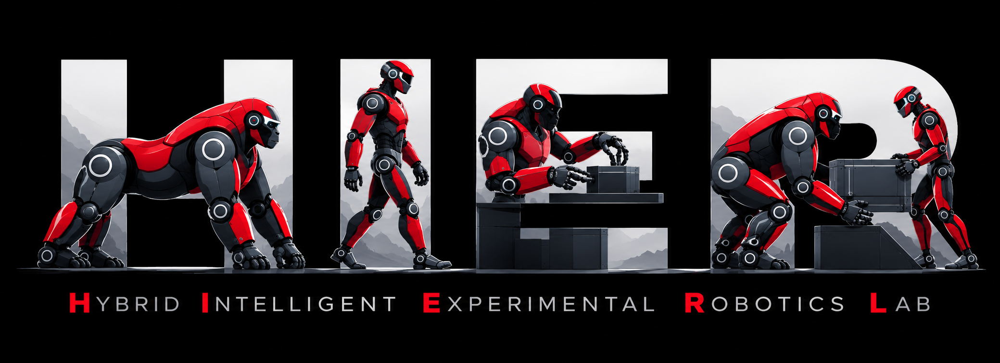
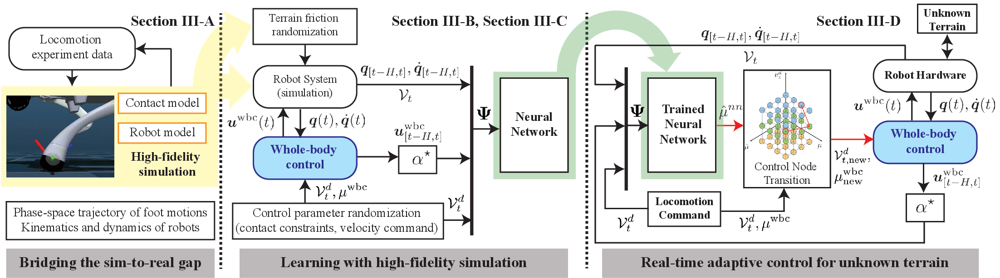
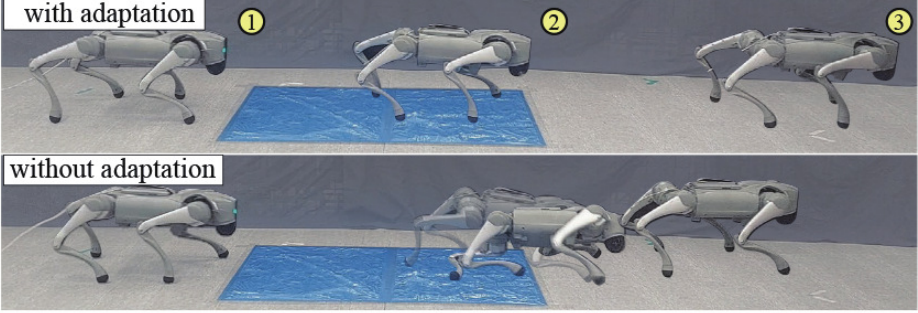
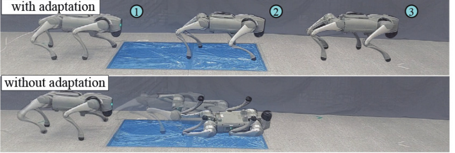
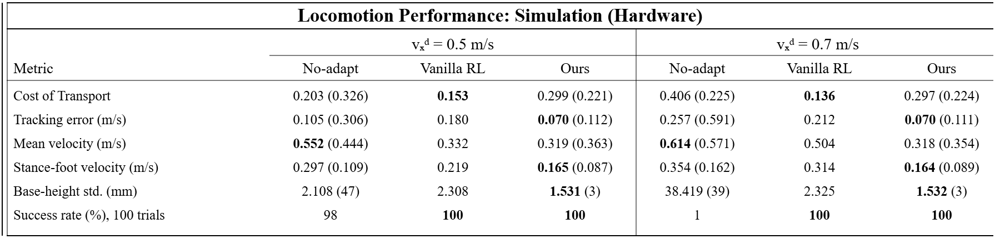

LA-WBC: Learning-driven Adaptation of Whole-Body Control for Safe Locomotion on Uncertain Terrain

Abstract
This paper proposes Learning-driven Adaptation of Whole-Body Control (LA-WBC) for quadrupedal locomotion on terrains with uncertain friction. LA-WBC infers terrain friction from proprioceptive feedback and WBC command-response features, and jointly adapts the friction coefficient used in the contact constraints and the commanded locomotion velocity. Unlike end-to-end reinforcement learning (RL), the proposed framework retains the nominal WBC structure and remains compatible with established WBC safety and stability analyses. Hardware-informed model matching and feature scaling improve sim-to-real friction inference and prediction consistency. Compared with the evaluated RL baseline, the proposed pipeline requires approximately 12% of the total data-generation and training time. Simulation and hardware experiments demonstrate improved velocity tracking, reduced foot slippage and base-motion variation, and higher locomotion success rates relative to non-adaptive WBC.
How It Works

Match the robot and contact models
Use hardware trajectories to calibrate simulation, then collect WBC rollouts across randomized terrain and control settings.
Infer terrain friction
Train a recursive graph neural network on proprioception and WBC command–response histories to estimate friction without extra foot force or vision sensors.
Update WBC parameters
Use inferred friction and a precomputed locomotion cost map to jointly adjust the friction coefficient in WBC contact constraints and the commanded velocity.
Results



100% vs 1%
Simulation success
LA-WBC versus non-adaptive WBC at 0.7 m/s desired speed across 100 low-friction course trials.
0.070 vs 0.257
Tracking error
Velocity RMSE in m/s in the same simulation comparison.
0.089 vs 0.162
Lowest measured stance-foot velocity
Hardware measurements in m/s at a 0.7 m/s command: LA-WBC versus non-adaptive WBC. At 0.5 m/s: 0.087 vs 0.109 m/s.
3.53 h vs 29 h
Pipeline time
Data generation, preprocessing, and training versus the evaluated end-to-end RL baseline, about 12% of its total time.
Hardware Experiments in Motion
BibTeX
Accepted to IEEE Robotics and Automation Letters. The official BibTeX will be added when the IEEE Xplore record and DOI are available.